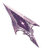
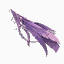
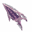
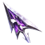

CYBER-ELF BROWSER MODULE V.05.4
Six editable launch links. Notes and preferences are stored locally in this Firefox profile, without encryption.
Customisable search commands. Keep {query} in each URL template.
{query}
Choose a coordinated font palette or tailor each layer. Fonts are packaged locally; nothing is fetched from a font service. Original preserves today's appearance.
Japanese Noto faces use installed fonts if present; otherwise Firefox chooses an available Japanese fallback. All Latin display, interface and diagnostic fonts are bundled offline.
These optional pointers affect the Ayarime dashboard only. Ordinary websites, Firefox toolbars and Linux desktop cursors retain their own settings.




Hover over these samples to test the matching pointer, I-beam, static busy ring, crosshair, diagonal resize and link-hand states. Cursor artwork here applies to this dashboard only. A separate native Linux cursor theme may be installed independently.
Ayarime's left-click correction menu uses a bundled, offline British-English dictionary. You can enable it on individual sites, across approved HTTPS websites, or leave Firefox's native spelling unchanged. No permission is requested at installation.
The all-websites mode requests Firefox's optional HTTPS page access. Compatible rich-text editors get custom underlines and corrections; ordinary textareas and text/search inputs keep Firefox's native underlines and context menu, with optional left-click suggestions. Password, sensitive, code and unsupported fields remain untouched. No page text is sent to an external spelling service.
Checking optional Firefox permission…
Disabling spelling does not silently revoke site access already granted for an RSS subscription. The separate Revoke control removes the broad grant while preserving individually approved sites. Firefox's own typing, Undo and spelling are the fallback whenever the extension cannot safely intervene.
Local notes and today's focus. Everything is saved automatically, without encryption.
SAVED LOCALLY
Previously closed tabs and windows from your current Firefox browsing session.
Enable session access to show recently closed tabs.
Extra browser information stays on your device. Enable only what you need; no browsing data is uploaded by ELF//SHELL.
OPTIONAL / reading granted permissions…
Reading host permissions…
Capture and restore sets of public web addresses. Stored locally, without encryption. Private tabs and browser-internal pages are never saved.
All actions are manual, require confirmation, and preserve your active or pinned tabs.
Recovery addresses persist locally without encryption until reopened or cleared, and may contain sensitive URL parameters. Reopening restores addresses only, not unsaved form contents. Use Firefox's Recently Closed panel if available for fuller session recovery.
Discarding unloads background pages to save memory; tabs reopen when selected. Pages with unsaved data may prevent closing or discarding.
Add public Substack publications or direct RSS/Atom addresses. News arrives straight from the sites you authorise, never through an ELF//SHELL server.
Each source requests site access individually. You can revoke that access here. Imported lists never trigger permission requests or automatic downloads until allowed. Headlines are cached locally; paid Substack posts may only include a preview.